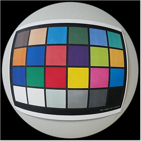

Related tuning blocks:
- Color correction (use 20 lux images for low-light CC)
- ABF noise profiling (use 1000/500/200/100/50/10 lux TL84 images)
- Green imbalance correction (GIC)
Note: If the image is taken with a
fisheye lens, to set the MCC markers for tuning, hold the Ctrl key (or Shift key) while
moving the markers.
